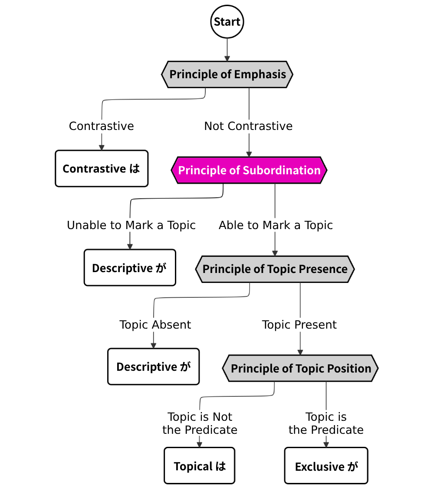
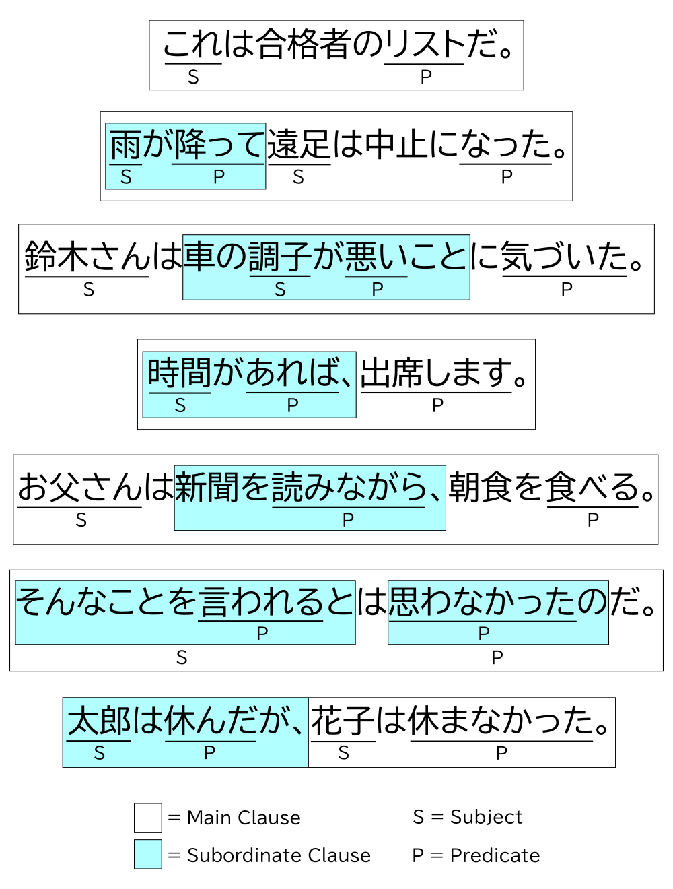
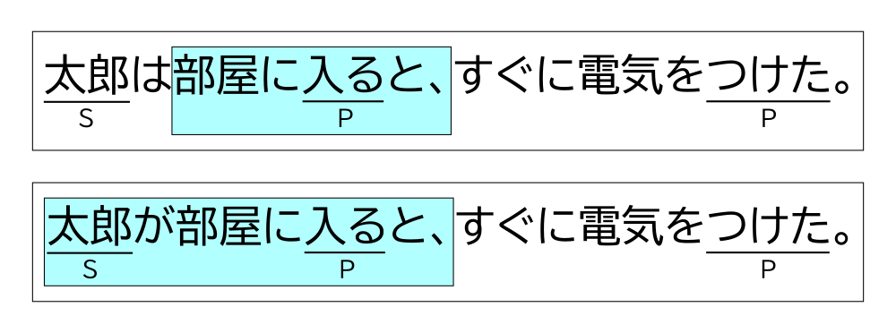

This article is one in a series that comprehensively explains usage of は vs. が in Japanese. Most content is directly pulled from 『｢は｣ と ｢が｣』 by Hisashi Noda.

Can the Clause Have a Topic?
The principle of subordination decides whether or not the clause the marked word is in can hold a topic. If the clause cannot hold a topic, we know that the word must be marked by descriptive が.
A clause is a unit of the language that is shorter than a sentence and longer than its words or phrases. In its most typical form, each clause in Japanese contains a subject and a predicate. It may also contain other case-marked nouns or adverbs. Keep in mind that you will come across clauses where the subject isn’t explicitly present. Omitting the subject is much more common in Japanese than it is in English.
When a sentence has two or more clauses, the clause with its predicate at the end of the sentence is usually the main clause. All clauses that are nested within it or come before it are subordinate clauses. It is possible for subordinate clauses to be nested within subordinate clauses. If a sentence only has one clause, then that clause is the main clause.
The following diagram shows example sentences with their clauses and subjects/predicates highlighted (丸山, 2016; 劉, 2022).

Sometimes, a subordinate clause without a subject will take the subject of the main clause. This is the case for the fifth sentence of the examples above (the subject of “読みながら” is “お父さん”).
The Subject in Subordinate Clauses
The method for choosing は vs. が in the main clause is generally the same one used in sentences with one clause. We will go over the principles governing this in future chapters. For now, let’s focus on how to use these particles in subordinate clauses.
There’s a general rule that states: when は marks a subject at the start of a sentence with multiple clauses, it usually marks the subject of all of the clauses.1 が, on the other hand, usually only marks the subject within its own clause. In other words, whatever は marks is relevant to everything until the end of the sentence, and whatever が marks stays in its own clause.
This general rule works because が is most commonly used in subordinate clauses.
Consider the following sentences (庵功雄, 2012). Example (1) uses は, and example (2) uses が.
1. 太郎は部屋に入ると、すぐに電気をつけた。
2. 太郎が部屋に入ると、すぐに電気をつけた。
Highlighting the clauses gives us the following diagrams.

Here are the correct interpretations of these sentences.
1. 太郎は部屋に入ると、すぐに電気をつけた。
After Taro entered the room, he turned on the light.
2. 太郎が部屋に入ると、すぐに電気をつけた。
After Taro entered the room, I turned on the light.
We change our interpretation of who turns on the light depending on whether は or が is used. In example (1) with は, the subject/topic “太郎” (Taro) cannot be contained in the subordinate clause “部屋に入ると” (after × entered the room). This is only possible if “太郎” is not a topic and marked by が. Thus, “太郎” is the subject of both the subordinate clause and the main clause in (1).
In (2), 太郎 is only the subject of the subordinate clause. The subject of the main clause is instead omitted, so it should be clear through context who else turned the light on. Strictly speaking, it doesn’t have to be “I”, the speaker, who turned the light on. It could be someone else, depending on the context of the sentence. But when Japanese speakers omit a subject, it’s likely that they’re referring to themselves.
The subordinate clause in both (1) and (2) can’t contain a topic, but this isn’t true of all subordinate clauses. These subordinate clauses in particular are strongly subordinate, which means they can’t exist without the main clause. We’ll go over levels of subordination in the next section.
Levels of Subordination
There are four levels of subordination, described in the following table.
| Description | |
|---|---|
| Full Subordination | This portion of the sentence can’t contain any topics or subjects at all, so they are actually phrases, not clauses. |
| Strong Subordination | The subordinate clause is completely dependent on the main clause. It can contain a subject, but not a topic. |
| Weak Subordination | The subordinate clause functions like a separate sentence, but still makes up one sentence with the main clause. It can contain a subject or a topic. Rules for choosing between は/が are generally the same as those for the main clause. |
| Quotative | The subordinate clause is a quote. It can contain a subject or a topic. Rules for choosing between は/が are generally the same as those for the main clause. |
We can usually figure out a subordinate clause’s level of subordination by looking at how it ends. The chart below gives common examples of subordinate clauses, their level of subordination, and tells us whether that clause is able to contain descriptive が and topical は.
| Clauses/Phrase Types | Examples |
が | は |
|
|---|---|---|---|---|
| Fully Subordinate |
Incidental Phrases | 〜ながら, 〜まま, 〜て | × | × |
| Successive Phrases | 〜て, 〜[連用形] | |||
| Strongly Subordinate | Successive Clauses | 〜と, 〜たら, 〜て, 〜[連用形] | ○ | × |
| Conditional Clauses | 〜たら, 〜(れ)ば, 〜と, 〜ては, 〜ても | |||
| Manner Clauses | 〜ように, 〜ほど | |||
| Temporal Clauses | 〜とき, 〜まえに, 〜あとで, 〜まで | |||
| Noun-modifying Clauses | 〜[noun] | |||
| Nominalized Clauses | 〜こと, 〜の, 〜か | |||
| Causal Clauses (1) | 〜ため, 〜て, 〜から(focus), 〜ので(focus), 〜のに(focus) | |||
| Weakly Subordinate |
Causal Clauses (2) | 〜から, 〜ので, 〜のに | ○ | ○ |
| Parallel Clauses | 〜て, 〜[連用形], 〜し, 〜けれど, 〜が | |||
| Quotative | Quotative Clauses | 〜と, 〜って | ○ | ○ |
Examples of subordinate clauses
Incidental Phrases (付帯状況句)
3. [そんなことを考えながら、]眠りについた。
With my mind full of such thoughts, I fell asleep.
4. 私は[目を見開いたまま、]固まってしまった。
I froze with my eyes wide open.
5. 皆が席に着くのを確認すると男は[教壇に立って]話し始めた。
After waiting for everyone to be seated, the man stood at the lecturn and started to speak.
Successive Phrases (継起句)
The subject of successive phrases is the same as the subject of the main clause.
6. 健一は[部屋に入っていって]由紀に声をかけた。
Ken’ichi came in and started talking to Yuki.
7. 夕食後、僕は[シャワーを浴び、]歯をみがいた。
After eating dinner, I showered and brushed my teeth.
Successive Clauses (継起節)
The subject of successive clauses is not the same as the the subject of the main clause.
8. [健一が部屋に入っていくと、]由紀は出ていった。
After Ken’ichi came in, Yuki left.
9. [そんなことを考えていたら、]部屋にノックの音が響いた。
As I was thinking about it, I heard a knock on my door.
10. [雨が降って]遠足は中止になった。
It rained, and the outing was postponed.
11. [目の前が真っ暗になり、]意識が遠ざかっていく。
My vision went dark, and I felt myself losing consciousness.
Conditional Clauses (仮定節)
12. [困ったことがあったら]相談してください。
If there’s ever anything troubling you, please reach out to me.
13. [私にできることがあれば、]なんでもおっしゃってください。
If there’s anything I can do, please tell me.
14. [早く帰らないと、]両親が心配するだろう。
If I don’t get home soon, my folks are going to worry.
15. [こんなに雪が降っては、]どこにも出かけられない。
If it keeps snowing like this, I won’t be able to go anywhere.
16. [私が謝っても]許してもらえませんか。
Would you not forgive me even if I said I’m sorry?
Manner Clauses (様態節)
17. 俺は[その場から逃げるように]立ち去った。
I left quickly to escape that situation.
18. それは[思わず息を呑むほど]美しい光景だった。
It was a view so beautiful, you’d find yourself holding your breath.
Temporal Clauses (時間節)
19. [目が覚めた時、]周囲は真っ暗だった。
When I woke up, everything was dark.
20. [疑問や文句が出るまえに、]頭を衝撃が襲う。
I was too stunned to protest or question anything.
21. 彼女は[しばらく何かを考え込んだ後で]口を開いた。
After thinking for a short moment, she spoke.
22. [その理由が分かるまで、]そう時間はかからなかった。
It didn’t take long for me to figure out why.
Noun-modifying Clauses (連体修飾節)
23. やっぱり[映画館で見る映画]はいいよな。
Movies are so much better in theaters.
Nominalized Clauses (名詞節)
24. それは[この場にいる全員が思っていること]だった。
That was what everyone in the room was thinking.
25. [私が知っているの]はこれだけです。
That is all I know.
26. その後、[二人がどうなったか]は知らない。
I don’t know what happened to those two afterwards.
Causal Clauses (理由節)
27. [訓練を始めて日が浅いため、]それほど上達はしていない。
It hasn’t been long since he started training, so he hasn’t improved much yet.
28. [彼が帰って、]会は面白くなった。
After he left, the party got interesting.
〜から, 〜ので, and 〜のに clauses are strongly subordinate (only take が) if the information expressed in them is the focus of the sentence. In other words, the subject should be marked with が if the information in these clauses is important or unknown to the listener. This is common in sentences answering questions with どうして and なぜ, as well as in sentences where the clause is the comment of a topic sentence (as in 〜は〜からだ。)
29.「じゃ、どうして桃子に渡したりするのよ! どうして直接会いにこないのよ!」
「[貞が、あなとのこと好きみたいだったから、]なんか会いづらくなって…」
“Then why would you hand it to Momoko!? Why wouldn’t you meet me face-to-face!?”
“Because Sada liked you, and it felt wrong to meet you…”
30. なぜ猫には、こんなに派手に変化する瞳孔があるのだろう。それは、[猫が優れた夜のハンターだから]だ。
Why do cats’ pupils narrow and widen like so? It is because they are top-notch night hunters.
〜から, 〜ので, and 〜のに clauses are weakly subordinate (may take は or が) if it does not have this function. The method for choosing between は or が in this case is the same as it is for the main clause (covered in Chapter 5 and 6).
31. [この本は面白いので、]読んでみてください。
This book is very interesting, so please read it.
32. [田中さんはパーティーに来たのに、]林さんは来なかった。
Tanaka came to the party, but Hayashi didn’t.
Parallel Clauses (並列節)
33. [兄は銀行に入って、]姉は大学に残った。
My brother went into banking, and my sister stayed in college.
34. [おじいさんは山へ行き、]おばあさんは川へ行った。
The old man went into the mountains, and the old woman went to the river.
35. [これまでがそうだったし、]これからもそうなのだろう。
It has always been that way, and it will always be that way.
36. [顔が真っ赤になってるけど、]どうしたの？
Your face is all red, what happened?
37. [東京は震災前から大都市として変貌しつつあったが、]震災復興がそれに一挙に加速した。
Tokyo was already transforming as a major city before the disaster, but the process of rebuilding the city following the earthquake has accelerated that transformation dramatically.
Contrastive は is common in 〜が and 〜けど clauses.
38. 一般労働者の意識調査によれば、[“政党離れ”は進んでいるが、]政党への関心は決して低くない。
According to a survey of general workers, respondants increasingly report no affiliation to any party, but interest in political parties has remained steady.
Quotative Clauses (引用節)
39. 私は、[あなたは誰の料理が一番食べたいと]聞かれたら、私の料理と答える。
When I’m asked whose cuisine I’d rather eat, I always answer, “my own.”
40. [今度は誰だって]思ったけど、知らない女の子だった。
I thought, “Who is it this time?” but it was a girl I’d never seen before.
Quotative clauses generally follow the same rules as that of the main clause for choosing between は and が, but when applying a negated sense to a quotative clause (like in 「〜とは思わなかった」,「〜なんて信じられない」,「〜とでも言うのか」), が is commonly used, even when は would normally appear.
41. 「あの子は真面目な子なの。」
「[俺が不真面目だって]言うのかい？」
“She’s a serious girl.”
“Are you saying I’m not serious?”
Continued in 5. The Principle of Topic Presence…
Notes
-
This general rule doesn’t apply to weakly subordinate clauses or quotative clauses. ↩